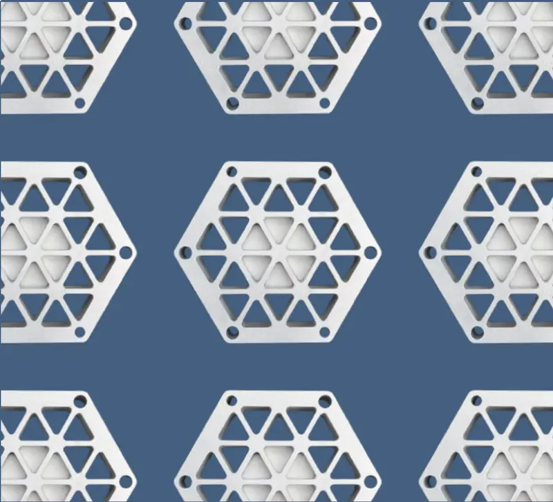

CNC Machined Coaster
A HAAS CNC mill certification project focused on machine setup, tooling, G-code execution, and finishing rather than a long manual-machining sequence.

- Machine
- HAAS CNC mill
- Machining time
- About 1 hour
- Original estimate
- About $40
- Completion
- Fall 2024
Certification project
The coaster was different from the clock and screwdriver because it functioned as the practical exam for my HAAS CNC mill certification. The work emphasized machine setup, familiarity with the tooling, and correctly executing the programmed process under exam conditions.
My original estimate used roughly one hour of labor and $10-$20 of aluminum stock. The class portfolio treated the finished single coaster as approximately a $40 part after labor, with bead blasting added as a finish.
What I learned
The preparation was as important as the cut. I found it useful to take the certification soon after the HAAS CNC labs while machine setup and tool identification were still fresh, and to ask questions before the exam rather than discover uncertainty during it.
Because the process is automated, the operator time is much lower than on the other two manufacturing projects. That shifts the optimization problem from manual cutting time toward toolpath efficiency, setup changes, and fixturing.
Process improvement
The two improvements I identified were G-code optimization and fixturing. A more efficient toolpath reduces spindle time directly, while a fixture that supports both trimming and drilling would reduce the need to stop and re-fixture the coaster midway through the process.
That becomes much more important when the goal shifts from passing a certification exam to producing many identical parts.
Original class portfolio: Coaster project ↗